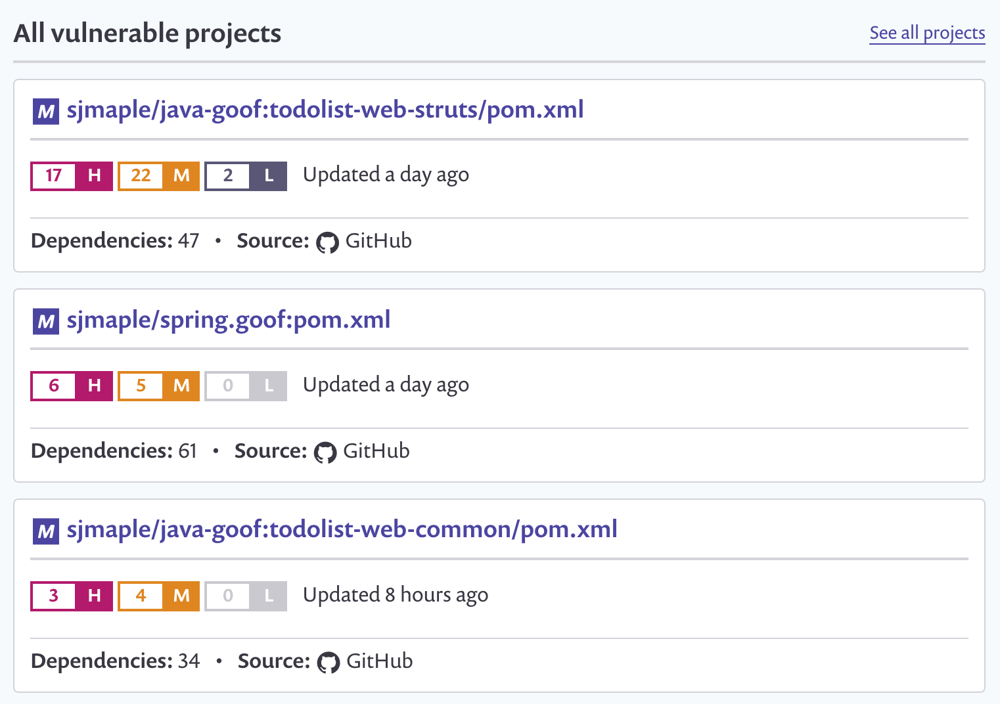
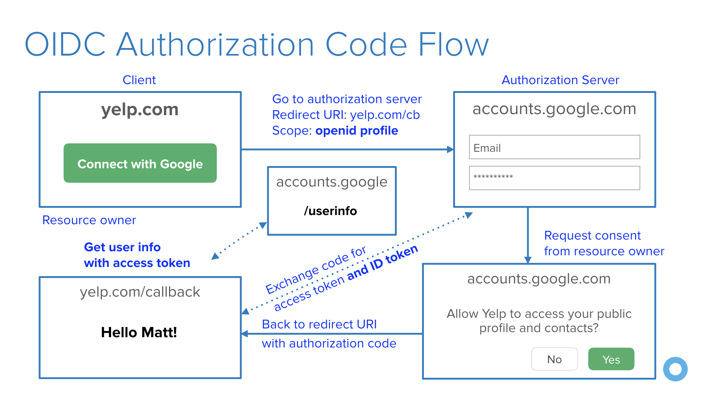

10 Excellent Ways to Secure Your Spring Boot Application
https://developer.okta.com/blog/2018/07/30/10-ways-to-secure-spring-boot
Spring Boot has dramatically simplified the development of Spring applications. Its autoconfiguration and starter dependencies reduce the amount of code and configuration you need to begin an app. If you were used to Spring and lots of XML back in the day, Spring Boot is a breath of fresh air.
Spring Boot was first released in 2014, and a lot has changed since then. Much like code quality and testing, security has become a concern in developers minds. If you’re a developer and you’re not concerned about security, chances are you think you should be. This post aims to educate you on steps you can take to create a more secure Spring Boot application.
I collaborated on this post with Simon Maple, fellow Java Champion and Director of Developer Relations at Snyk. We both work for companies in the security industry, love Java, and want to help developers create more secure applications. We figured writing this post would be a fun way to give back to the community. If you have additional suggestions from the ones we’ve listed, please add them in the comments!
1. Use HTTPS in Production
Transport Layer Security (TLS) is the official name for HTTPS. You might’ve heard it called SSL (Secure Sockets Layer). SSL is the deprecated name. TLS is a cryptographic protocol that provides secure communication over a computer network. Its primary goal is to ensure privacy and data integrity between computer applications.
TLS/SSL certificates used to be expensive, and HTTPS was considered slow. Machines have become much faster, solving the performance problem, and Let’s Encrypt provides free TLS certificates. These two developments have changed the game and caused TLS to become mainstream.
As of July 24, 2018, Google Chrome now labels HTTP sites as “not secure”. While this has created a fair amount of controversy in the web community, it’s here to stay. Troy Hunt, a well-known security researcher, has created a Why No HTTPS? site that tracks large websites not using HTTPS. You might not be developing the next major website, but why limit yourself?!
Generating and renewing Let’s Encrypt TLS certificates can be automated. Since they’re free, there’s no reason not to do it! Spring Boot Secured By Let’s Encrypt is a useful guide on how to do this.
To force HTTPS in your Spring Boot app, you can extend WebSecurityConfigurerAdapter and require a secure connection.
@Configuration
public class SecurityConfiguration extends WebSecurityConfigurerAdapter {
@Override
protected void configure(HttpSecurity http) throws Exception {
http.requiresChannel().requiresSecure();
}
}
This configuration will also force HTTPS in development, which can be a pain because you have to use a self-signed certificate. If you’re using Heroku, Cloud Foundry, or other cloud providers, a more logical configuration is to look for the X-Forwarded-Proto header.
@Configuration
public class SecurityConfiguration extends WebSecurityConfigurerAdapter {
@Override
protected void configure(HttpSecurity http) throws Exception {
http.requiresChannel()
.requestMatchers(r -> r.getHeader("X-Forwarded-Proto") != null)
.requiresSecure();
}
}
Cloud providers can greatly simplify TLS certificates. Amazon Certificate Manager is exactly like Let’s Encrypt except it’s built into all of the AWS products/services by default. It lets you provision 100% free SSL certs and handles automatic renewal, etc., with literally zero effort/config. Heroku has Automated Certificate Management too.
Another important thing to do is to use HTTP Strict Transport Security (HSTS). HSTS is a web security policy mechanism that protects websites against protocol downgrade attacks and cookie hijacking. The server communicates the HSTS Policy to the browser with a response header field named Strict-Transport-Security. Spring Security sends this header by default to avoid the unnecessary HTTP hop in the beginning.
2. Check Your Dependencies with Snyk
There’s a good chance you don’t know how many direct dependencies your application uses. It’s extremely likely you don’t know how many transitive dependencies your application uses. This is often true, despite dependencies making up the majority of your overall application. Attackers target open source dependencies more and more, as their reuse provides many victims for a malicious hacker. It’s important to ensure there are no known vulnerabilities in the entire dependency tree of your application.
Snyk tests your application build artifacts, flagging those dependencies that have known vulnerabilities. It provides you with a list of vulnerabilities that exist in the packages you’re using in your application as a dashboard.

Additionally, it will suggest upgrade versions or provide patches to remediate your security issues, via a pull request against your source code repository. Snyk also protects your environment, by ensuring that any future pull requests raised on your repository are automatically tested (via webhooks) to make sure they do not introduce new known vulnerabilities.
New vulnerabilities are found in existing projects and libraries every day, so it’s important to also monitor and protect your production deployments. Snyk takes snapshots and monitors your deployment so that when new vulnerabilities are found, you can automatically be notified via your preferred channel, JIRA, slack or email as well as have pull requests created to offer upgrades and patches to the new vulnerabilities.
Snyk is available via a web UI as well as a CLI, so you can easily integrate it with your CI environment, and configure it to break your build when vulnerabilities exist with a severity beyond your set threshold.
You can use Snyk for free for open source projects or for private projects with a limited number of monthly tests.
3. Upgrade To Latest Releases
There are various reasons to regularly upgrade the dependencies in your application. Security is one of the most important reasons that will give you the motivation to upgrade. The start.spring.io starter page uses the most recent versions of Spring packages as well as dependencies, where possible.
“I find looking for vulnerabilities in your dependencies may help motivate people to upgrade. However, there is plenty of evidence that not all CVEs are even reported. Generally, I find the ideal (perhaps not practical) solution is to be on latest and greatest.” — Rob Winch
Infrastructure upgrades are often less disruptive than dependency upgrades, as library authors vary in their sensitivity to backward compatibility and behavior changes between releases. That being said, you have three options when you find a security vulnerability in your configuration: Upgrade, Patch or Ignore.
Upgrades are the safest, in terms of the overall health of your application after you make any necessary changes to your app to make use of the newer version.
Patches to a vulnerable project eliminate the vulnerability from the package, but typically leaves you will a configuration which might not be as well tested. There will be fewer code changes to your library as the patch will only be changing vulnerable code, so your chances of breaking backward compatibility or introducing behavior changes are reduced. Third party security companies such as Snyk handcraft patches for many vulnerabilities so that if it’s not possible to upgrade to a newer version of a library you can still use an older version with a patch.
Ignoring a vulnerability is, of course, an option, but not a good one. Perhaps you know of a vulnerability, but do not believe it is directly exploitable. Keep in mind that it might not be in your application flow today, but at some point, a developer might add additional code that uses a vulnerable path.
4. Enable CSRF Protection
Cross-Site Request Forgery is an attack that forces a user to execute unwanted actions in an application they’re currently logged into. If the user is a normal user, a successful attack can involve state-changing requests like transferring funds or changing their email address. If the user has elevated permissions, a CSRF attack can compromise the entire application.
Spring Security has excellent CSRF support that’s on by default. If you’re using Spring MVC’s <form:form> tag or Thymeleaf and @EnableWebSecurity, the CSRF token will automatically be added as a hidden input field.
If you’re using a JavaScript framework like Angular or React, you will need to configure the CookieCsrfTokenRepository so JavaScript can read the cookie.
@EnableWebSecurity
public class WebSecurityConfig extends WebSecurityConfigurerAdapter {
@Override
protected void configure(HttpSecurity http) throws Exception {
http
.csrf()
.csrfTokenRepository(CookieCsrfTokenRepository.withHttpOnlyFalse());
}
}
If you’re using Angular, this is all you need to do. If you’re using React, you’ll need to read the XSRF-TOKEN cookie and send it back as an X-XSRF-TOKEN header.
Spring Security automatically adds a secure flag to the XSRF-TOKEN cookie when the request happens over HTTPS. Spring Security doesn’t use the SameSite=strict flag for CSRF cookies, but it does when using Spring Session or WebFlux session handling. It makes sense for session cookies since it’s being used to identify the user. It doesn’t provide much value for CSRF cookies since the CSRF token needs to be in the request too.
5. Use a Content Security Policy to Prevent XSS Attacks
Content Security Policy (CSP) is an added layer of security that helps mitigate XSS (cross-site scripting) and data injection attacks. To enable it, you need to configure your app to return a Content-Security-Policy header. You can also use a <meta http-equiv="Content-Security-Policy"> tag in your HTML page.
Spring security provides a number of security headers by default:
Cache-Control: no-cache, no-store, max-age=0, must-revalidate
Pragma: no-cache
Expires: 0
X-Content-Type-Options: nosniff
Strict-Transport-Security: max-age=31536000 ; includeSubDomains
X-Frame-Options: DENY
X-XSS-Protection: 1; mode=block
Spring Security does not add a CSP by default. You can enable the CSP header in your Spring Boot app using the configuration below.
@EnableWebSecurity
public class WebSecurityConfig extends WebSecurityConfigurerAdapter {
@Override
protected void configure(HttpSecurity http) throws Exception {
http.headers()
.contentSecurityPolicy("script-src 'self' https://trustedscripts.example.com; object-src https://trustedplugins.example.com; report-uri /csp-report-endpoint/");
}
}
CSP is a good defense to prevent XSS attacks. Keep in mind that opening up your CSP to allow for a CDN often allows many very old and vulnerable JavaScript libraries to be accessed. This means using a CDN often means that you are no longer adding much value to the security of your application.
You can test your CSP headers are working with securityheaders.com.
6. Use OpenID Connect for Authentication
OAuth 2.0 is the industry-standard protocol for authorization. It uses scopes to define permissions about what actions an authorized user can perform. However, OAuth 2.0 is not an authentication protocol and provides no information about the authenticated user.
OpenID Connect (OIDC) is an OAuth 2.0 extension that provides user information. It adds an ID token in addition to an access token, as well as a /userinfo endpoint that you can get additional information from. It also adds an endpoint discovery feature and dynamic client registration.
The diagram below shows how OIDC works for authentication.

If you use OIDC for authentication, you won’t have to worry about storing users, passwords, or authenticating users. Instead, you’ll use an Identity Provider (IdP) to do this for you. Your IdP might even offer security add-ons like multi-factor authentication (MFA).
To see how to use OIDC in your Spring Boot application, see Get Started with Spring Security 5.0 and OIDC. To summarize how to use it, you need to add a few dependencies to your project, then configure a few properties in your application.yml file.
spring:
security:
oauth2:
client:
registration:
okta:
client-id: {clientId}
client-secret: {clientSecret}
scope: openid email profile
provider:
okta:
issuer-uri: https://{yourOktaDomain}/oauth2/default
NOTE: Using issuer-uri is only supported in Spring Security 5.1, which is under active development and scheduled for release in September 2018.
You can set up your own OIDC Server using an open source system like Keycloak. If you’d rather not maintain your own server in production, you can use Okta’s Developer APIs. Sign up today for a free account and get 1000 active users per month at developer.okta.com/signup!
If you want to play with OAuth 2.0, OIDC, and the different flows it allows, see https://www.oauth.com/playground. This site does not require you to create an account, but it does use Okta’s Developer APIs under the covers.
7. Managing Passwords? Use Password Hashing!
Storing passwords in plain text is one of the worst things you can do for the security of your app. Luckily, Spring Security doesn’t allow plain text passwords by default. It also ships with a crypto module you can use for symmetric encryption, key generation, and password hashing (a.k.a., password encoding).
PasswordEncoder is the main interface for password hashing in Spring Security and looks as follows:
public interface PasswordEncoder {
String encode(String rawPassword);
boolean matches(String rawPassword, String encodedPassword);
}
Spring Security provides several implementations, the most popular being BCryptPasswordEncoder and Pbkdf2PasswordEncoder.
For managing passwords in general, we recommend using either SCrypt or Argon2. SCrypt is old now (been around a while), and has an extra complexity factor that BCrypt doesn’t, making it exponentially more difficult/expensive to brute force. It’s written by a famous cryptographer/security guy (Colin Percival) and has great libraries in just about every programming language. SCrypt is also endorsed by Latacora.
From Randall Degges, a cryptography expert on the Okta Developer Relations team:
Argon2 is relatively new (a few years old now), but has been widely audited/reviewed and was the result of a cryptographic hashing challenge that many organizations took part in over the course of several years. It’s without a doubt the “strongest” hashing algorithm of them all adds another layer of complexity that scrypt doesn’t, which makes it exponentially more expensive/difficult to brute force compared to scrypt. Argon2 is awesome, and I’ve used it with great success in several languages, but if you’re worried about being too bleeding-edge scrypt is a safe bet, and not controversial.
From Rob Winch, Spring Security Lead:
“I like BCrypt, but the general advice is one-way adaptive hashes. Some users may need to use PBKDF2 for compliance reasons. There is a ticket logged for Argon2 support, but there are not any Apache 2 native Java implementations that I have found (if you know of any, please let me know!). Instead, the libraries rely on a binary that they delegate to which isn’t ideal from my perspective. We are on the fence about waiting vs. leveraging one of the implementations that delegate to a binary.”
For those that want to use SCrypt, there is support in Spring Security through Bouncy Castle in SCryptPasswordEncoder. Spring Security 5.1 (est. late September 2018) will ship with a UserDetailsPasswordService API that allows you to upgrade your password storage.
8. Store Secrets Securely
Sensitive information such as passwords, access tokens, etc., should be handled with care. You cannot leave these around, pass them in plain text, or be predictable if keeping them in your local storage. As (GitHub) history has proved time and time again, developers do not think carefully enough about how they store their secrets.
Of course, you could and should encrypt your sensitive data, such as a password. Now that your password is safe, you have a new secret, your decryption key! What are you going to do with this new secret? Maybe store it locally? Perhaps in another location, somewhere you think an attacker would struggle to find it. This doesn’t fix the problem; it just defers it. Without putting a proper process in place, you only make it slightly harder for a hacker to unlock your secrets.
A good practice is to store secrets in a vault that can be used to store, provide access to, and even generate credentials to services that your application may use. Vault by HashiCorp makes storing secrets trivial, as well as offering a number of additional services. Vault can be configured so that no one person can access all data, providing no single point of control. The root key Vault uses changes regularly and is only stored in memory. There’s a master switch that when triggered will seal your vault, stopping it from sharing secrets if an issue occurs. Vault uses tokens that are assigned to policies that can scope particular users, services, or applications. You can also integrate with common authentication mechanisms such as LDAP to obtain tokens.
In addition to the golden-path view where no issues exists, Vault also helps with the scenario that exists when you have been hacked. At this point it’s important to revoke single or multiple secrets, perhaps by a specific user, or of a specific type. Vault offers an automated way to do this quickly when the time comes.
If this interests you, be sure to invest some time looking at the Spring Vault which adds an abstraction over the HashiCorp Vault, providing Spring annotation based access for clients, allowing them to access, store, and revoke secrets without getting lost in the infrastructure. The following code snippet shows how easy it is to extract a password from the Spring Vault using an annotation.
@Value("${password}")
String password;
9. Test Your App with OWASP’s ZAP
The OWASP ZAP security tool is a proxy that performs penetration testing against your live application at runtime. It’s a popular (over 4k stars) free, open source project that is hosted on GitHub.
Two approaches OWASP ZAP uses to find vulnerabilities are Spider and Active Scan. The Spider tool starts with a seed of URLs, which it will access and parse through each response, identifying hyperlinks and adding them to a list. It will then access these newly found URLs and recursively continue, creating a map of URLs for your web application. The Active Scan tool will automatically test your selected targets against a list of potential vulnerabilities. It provides you with a report that shows where your web application is exploitable, with details about the vulnerability.
10. Have Your Security Team do a Code Review
Code reviews are essential for any high performing software development team. At Okta, all of our production code and official open source projects are required to go through an analysis from our expert security team. You might not have security experts at your company, but if you’re dealing with sensitive data, maybe you should!
Don’t Allow Your Lack of Security to be Disturbing
Okta has some great t-shirts that say “I find your lack of security disturbing”. We love to hear the sound of latex gloves being put on as we wear them when traveling through airports. Don’t be the type of developer that lacks security in their Spring Boot apps!
To learn more about Spring Boot and security in your applications, check out the following tutorials and articles:
- Get Started with Spring Security 5.0 and OIDC
- Use React and Spring Boot to Build a Simple CRUD App
- Add Role-Based Access Control to Your App with Spring Security and Thymeleaf
- Security and the API Journey
- Preparing a Spring Boot App for Production on Heroku
If you like this article and want to see more like it, follow @oktadev on Twitter, or on Facebook. And as always, we’d love to hear from you in the comments below.
Please enable JavaScript to view the comments powered by Disqus.
Copyright © 2015 Powered by MWeb, Theme used GitHub CSS.